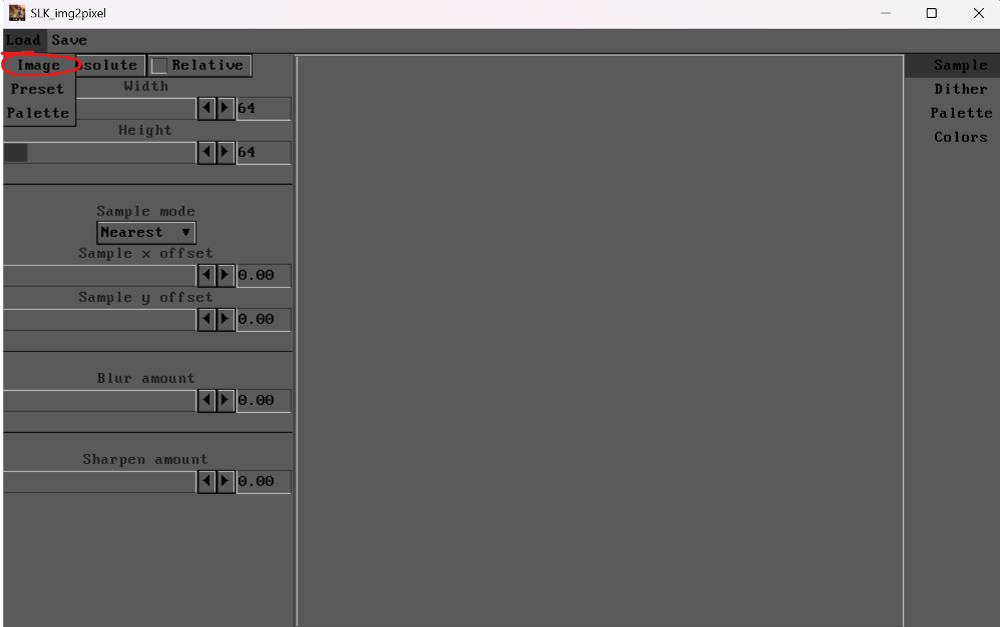
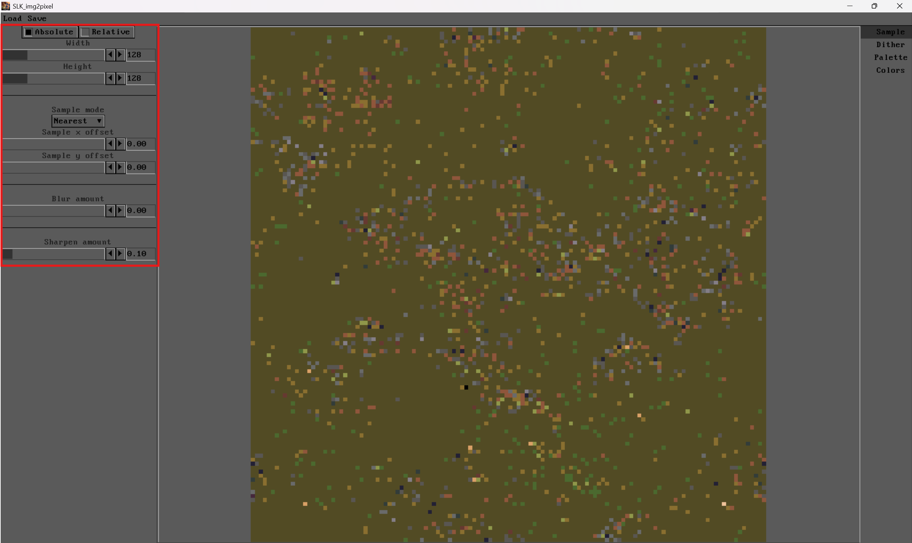
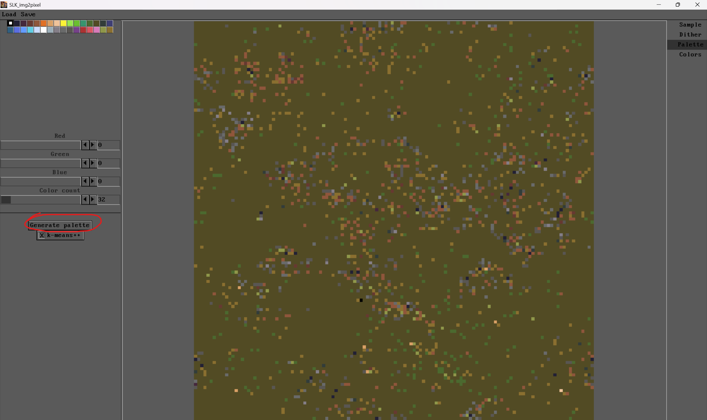
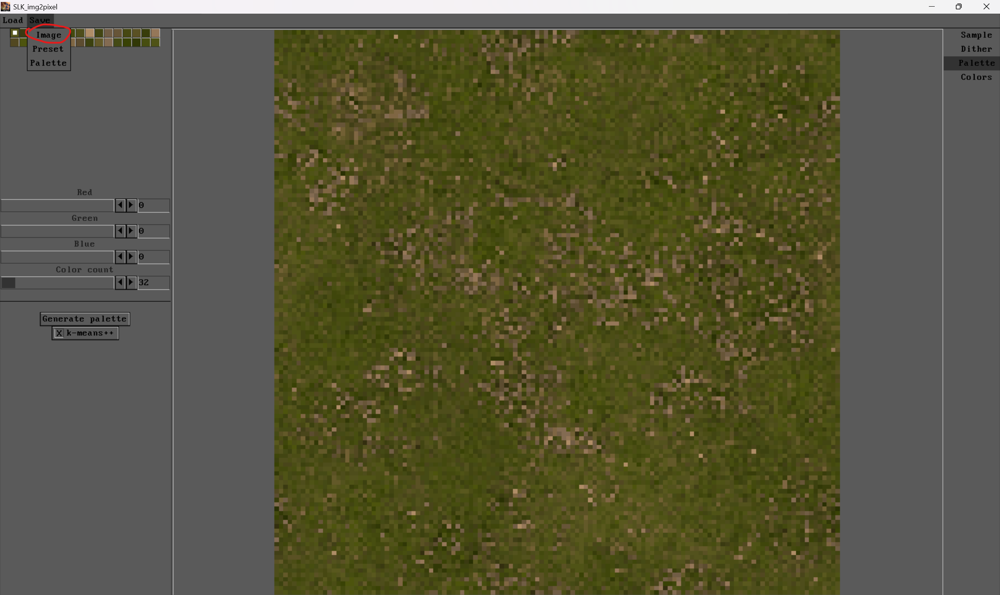
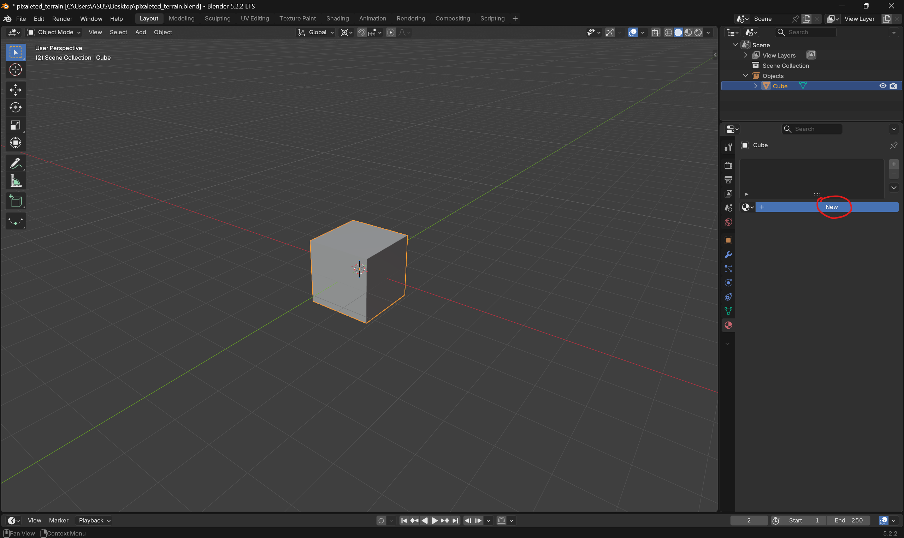
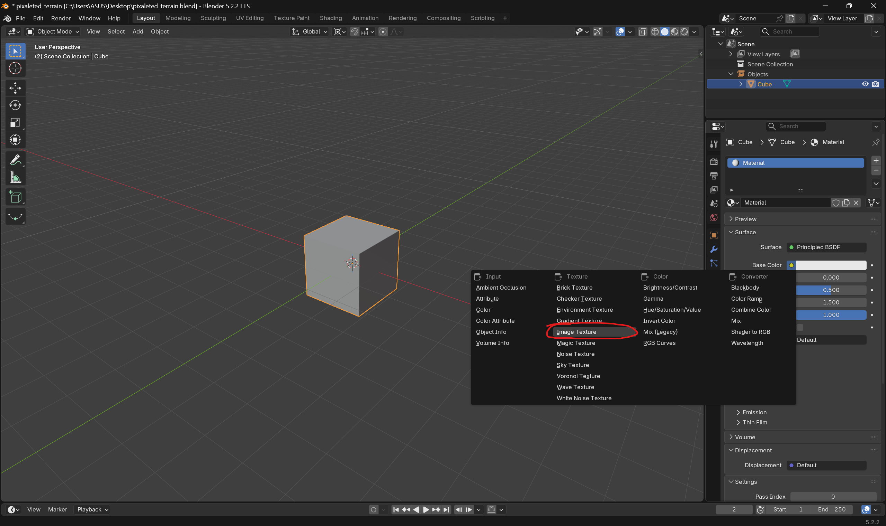
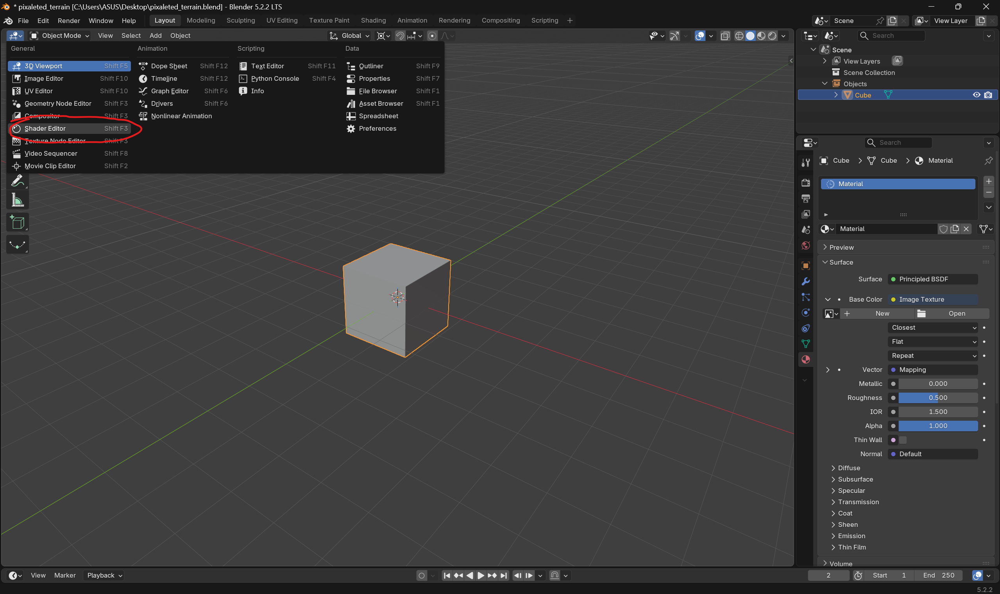
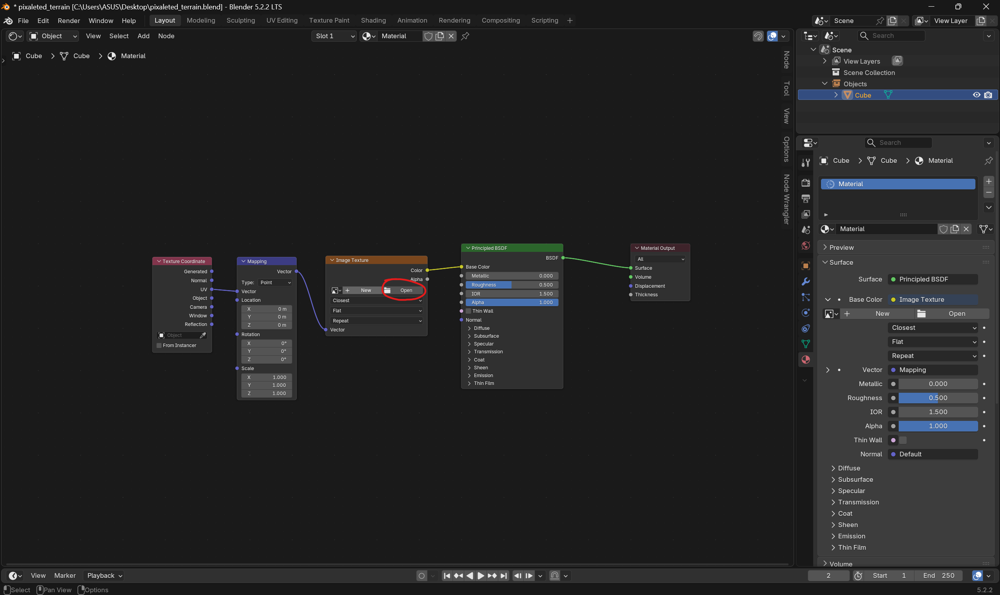
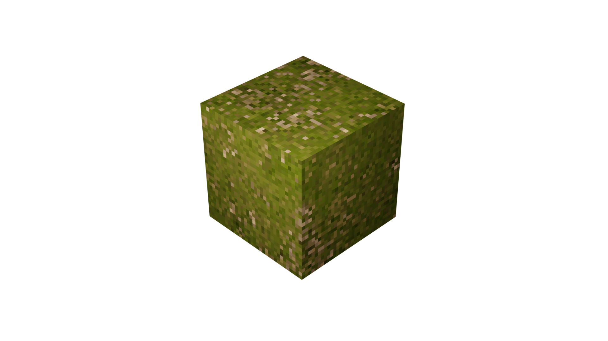

Find some material to use on your model. You can find materials at Poly Haven
here is the link


You can adjust the settings to get what you want.

Generate pallete for original color palette. You can adjust it later or load your own palette.

When you are done, save your image.

Create new material and assign it to your model.

Must choose image texture for base color.

Change view to shader editor.

then add texture coordinate and mapping nodes. connect them like in the image. Press open at image texture node and choose your pixel art image texture. you can adjust metallic, roughness and IOR values to get the look you want.

At final, you will get a pixelated look for your model.